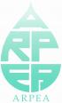

|
|
En partenariat avec |
Ziele des CAS
Das Certificate of Advanced Studies CAS erlaubt den Teilnehmenden:
- strategische Herausforderungen der Nachhaltigen Entwicklung für ihr Unternehmen oder ihre Verwaltungseinheit zu identifizieren;
- einen integrierten Führungsansatz und ein integriertes Managementsystem zu entwickeln, um die wirtschaftliche und soziale Performance mit Umweltverträglichkeit zu verbinden;
- mit modernen On-line-Instrumenten die Nachhaltigkeits-Performance ihres Unternehmens zu evaluieren und zu verbessern;
- Ressourcen- und Energieeffizienz zu verbessern, Einwirkungen auf die Umwelt und Risiken zu reduzieren;
- die Umwelt- und Sozialperformance ihres Unternehmens zu kommunizieren und sich gegenüber der Konkurrenz zu positionieren;
- mit neuen Schlüsselkompetenzen in Nachhaltiger Entwicklung eine neue berufliche Herausforderung angehen.
Zielpublikum
Der CAS richtet sich an mittlere und höhere Fach- und Führungskräfte von Unternehmen, öffentlicher Verwaltung und halböffentlichen Institutionen wie industriellen Betrieben oder den im Bereich der Gesundheit tätigen Institutionen und Organisationen.
Angesprochen sind
- jetzige und zukünftige Qualitäts-, Umwelt- und Sicherheitsbeauftragte;
-
Betriebs- und ProduktionsleiterInnen;
-
Produktmanager;
- Verantwortliche für Human Ressources;
- UnternehmerInnen;
- UnternehmensberaterInnen;
- IngenieurInnen und TechnikerInnen;
- sowie Personen, die eine neue berufliche Herausforderung angehen möchten.
Der CAS wird von folgenden Organisationen empfohlen:
|
|
|
 |
Ihre Mitglieder erhalten einen Rabatt von CHF 300.- auf die Teilnahmegebühr.